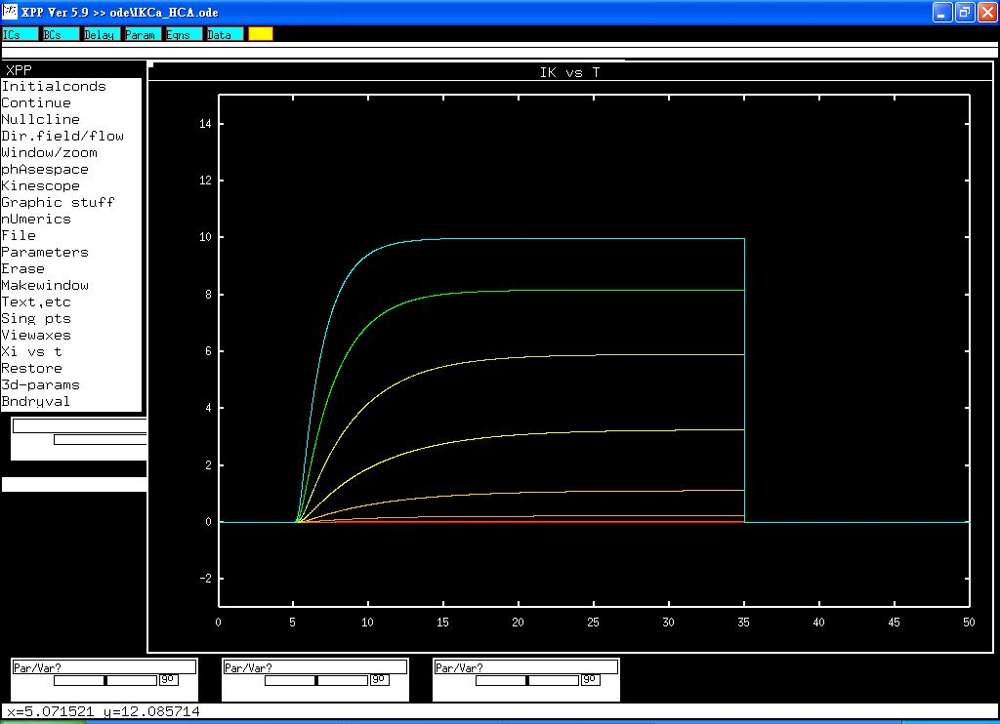

<pre>
This is the readme-txt for allosteric kinetic model associated with the paper.

Horrigan FT, Cui J, Aldrich RW. Allosteric voltage gating of potassium channels I: 
mSlo ionic currents in the absence of Ca2+. J Gen Physiol 1999;114:277-304.

Abstract:
Activation of large conductance Ca(2+)-activated K(+) channels is controlled 
by both cytoplasmic Ca(2+) and membrane potential. To study the mechanism of 
voltage-dependent gating, we examined mSlo Ca(2+)-activated K(+) currents in 
excised macropatches from Xenopus oocytes in the virtual absence of Ca(2+) 
(<1 nM). In response to a voltage step, I(K) activates with an exponential 
time course, following a brief delay. The delay suggests that rapid 
transitions precede channel opening. The later exponential time course 
suggests that activation also involves a slower rate-limiting step. However, 
the time constant of I(K) relaxation [tau(I(K))] exhibits a complex voltage 
dependence that is inconsistent with models that contain a single rate 
limiting step. tau(I(K)) increases weakly with voltage from -500 to -20 mV, 
with an equivalent charge (z) of only 0.14 e, and displays a stronger 
voltage dependence from +30 to +140 mV (z = 0.49 e), which then decreases 
from +180 to +240 mV (z = -0.29 e). Similarly, the steady state G(K)-V 
relationship exhibits a maximum voltage dependence (z = 2 e) from 0 to +100 mV, 
and is weakly voltage dependent (z congruent with 0.4 e) at more negative 
voltages, where P(o) = 10(-5)-10(-6). These results can be understood in 
terms of a gating scheme where a central transition between a closed and an 
open conformation is allosterically regulated by the state of four independent 
and identical voltage sensors. In the absence of Ca(2+), this allosteric 
mechanism results in a gating scheme with five closed (C) and five open (O) 
states, where the majority of the channel's voltage dependence results from 
rapid C-C and O-O transitions, whereas the C-O transitions are rate limiting 
and weakly voltage dependent. These conclusions not only provide a framework 
for interpreting studies of large conductance Ca(2+)-activated K(+) channel 
voltage gating, but also have important implications for understanding the 
mechanism of Ca(2+) sensitivity.
------------------------------------------------
To run the models:
XPP: start with the command

xpp ode\IKCa_HCA.ode

For a simple run:
Mouse click on Initialconds, and then (G)o.

To reproduce traces similar to fig 6A of the paper:


Click "Erase" to clear the graph
To run the series of voltage-clamp studies, 
click Initialconds -> Range over, change to 'vtest', 
and then select voltage protocol from 
Steps  10 
Start  80
End   240
Reset Storage Y
Use old ic's  Y
Cycle color   Y

When you click OK the voltage clamp family will be simulated.

The scheme IX kinetic parameters were shown in Table 1 of the paper.

Regarding xpp program, please contact with 
Bard Ermentrout's website <href="http://www.pitt.edu/~phase/"> http://www.pitt.edu/~phase/ </a>
describes how to get and use xpp.

These model files were submitted by:

Dr. Sheng-Nan Wu, Han-Dong Chang, and Jiun-Shian Wu
Dept Physiol
Natl Cheng Kung U Med Coll
Tainan 70101, Taiwan

snwu@mail.ncku.edu.tw
</pre>
